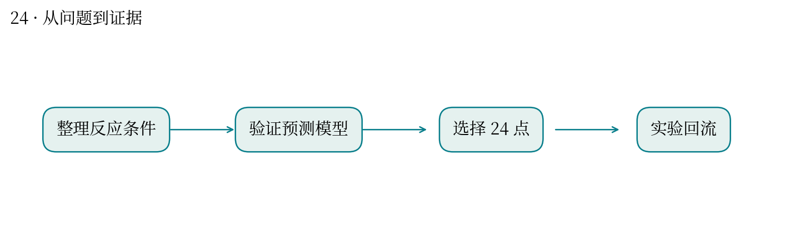
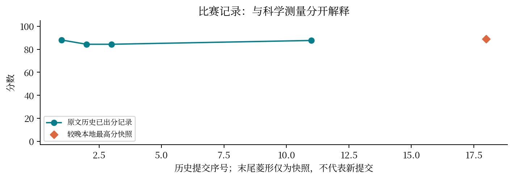

现实中想解决什么：催化条件很多时，怎样少做一些实验就找到较好条件？
从计算到应用：条件与历史响应 → 预测及批量推荐 → 下一轮催化实验。
这次实际做到哪一步：本题每轮选 24 点并改善本地交叉验证误差，支持候选优先级判断。
还缺什么：预测更准不自动保证找到更优条件；还需实验收益、重复性及目标工艺的验证。
反应条件组合太多，怎样用有限实验找到高收率？
最高分快照：88.83 · 2026-10-12T01:11:24+08:00
浓度、温度、碱、配体和溶剂组成组合空间。模型需要从有限 HPLC 收率数据中挑选下一批有价值的条件。
每轮选 24 点，比较建模方案和交叉验证；历史本地 CV RMSE 从模板约 0.1645 降至 0.1555。
较晚成绩快照为 88.83。本地误差下降是可报告的局部证据，不能直接等同隐藏实验增益。
随机划分可能让相近反应条件同时进入训练和验证；类别编码、外推条件与批次多样性值得检查。
像用已测植物样本预测性状：随机交叉验证好，不一定能预测新谱系或新环境。分组验证更接近外推问题。
公开 CV 和隐藏评测分布可能不同；需保留基线、分组与种子以解释差异。


| attempt | 提交时间 | 分数 | 状态 |
|---|---|---|---|
| 51805 | 10-10 23:53:35 | 88.0698 | 已出分 |
| 53648 | 10-11 10:49:07 | 84.3718 | 已出分 |
| 53659 | 10-11 10:50:28 | 84.3718 | 已出分 |
| 54596 | 10-11 16:06:18 | — | 排队中 |
| 54597 | 10-11 16:06:19 | — | 排队中 |
| 54598 | 10-11 16:06:20 | — | 排队中 |
| 54600 | 10-11 16:06:21 | — | 失败 |
| 54601 | 10-11 16:06:22 | — | 排队中 |
| 54602 | 10-11 16:06:23 | — | 排队中 |
| 54603 | 10-11 16:06:24 | — | 排队中 |
| 54630 | 10-11 16:13:33 | 87.6596 | 已出分 |
| 54631 | 10-11 16:13:38 | — | 排队中 |
| 54632 | 10-11 16:13:41 | — | 排队中 |
| 54657 | 10-11 16:22:26 | — | 排队中 |
| 54658 | 10-11 16:22:29 | — | 排队中 |
| 54675 | 10-11 16:26:40 | — | 排队中 |
| 55683 | 10-11 19:32:09 | — | 排队中 |
源文件 SHA256 见 证据清单；用 scripts/build.py 重建图表。